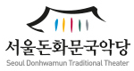
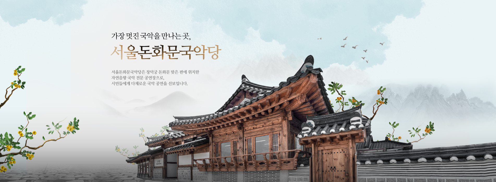
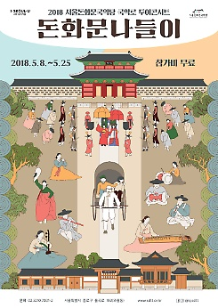
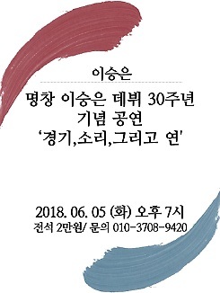
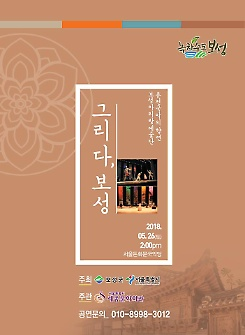
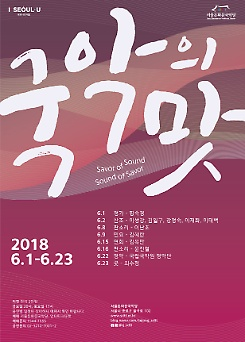

공연안내
공연행사 안내
국악마당 행사
예매안내
좌석배치도
대관안내
대관절차
대관내규/규정
대관신청안내
대관료
공지사항

공연안내

국악로 투어콘서트 [돈화문나들이]
2018-05-08 ~ 2018-05-25

한국의 찰리 채플린 김뻐국 눈물의 꽃, 웃음의 꽃
2018-05-18 ~ 2018-05-19

보성아리랑예술단 퓨전국악의 향연 '그리다, 보성'
2018-05-26 ~ 2018-05-26
">
2018 서울돈화문국악당 [국악의 맛]
2018-06-01 ~ 2018-06-23
국악로 투어콘서트 [돈화문나들이]
2018-05-08 ~ 2018-05-25
한국의 찰리 채플린 김뻐국 눈물의 꽃, 웃음의 꽃
2018-05-18 ~ 2018-05-19
보성아리랑예술단 퓨전국악의 향연 '그리다, 보성'
2018-05-26 ~ 2018-05-26
">
2018 서울돈화문국악당 [국악의 맛]
2018-06-01 ~ 2018-06-23
찾아오시는 길
공지사항
(재)세종문화회관 서울돈화문국악당 직원(육아휴직대체) 채용공고
2018-03-14
서울돈화문국악당 공연장 안내원 3기 모집 공고
2018-03-06
(재)세종문화회관 서울돈화문국악당 직원 채용공고(회계분야 재공고)
2018-02-21
(재)세종문화회관 서울돈화문국악당 직원 채용공고 (공연기획, 회계, 시설관리, 하우스매니저)
2018-02-08
2018년 서울돈화문국악당 공연장 2차 수시대관 공고
2018-02-05
2018 기획공연 [신통방통] 출연자(단체) 선정결과
2018-01-31
2018 기획공연 [新통방통] 예술가(단체) 모집 (~2018.01.25)
2018-01-09
2018년 서울돈화문국악당 공연장 수시대관 공고
2017-12-13
2017-18 공동기획 프로그램 [수어지교:판소리] 예술가(단체) 선정결과
2017-10-31
2017-8 공동기획 프로그램 [수어지교:판소리] 예술가(단체) 결과발표 변경안내 (2017.10.31.(화) 18:00)
2017-10-30
자주하시는 질문
고객문의